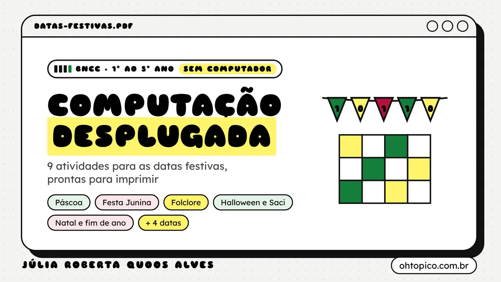

Computação desplugada nas datas festivas
Nove atividades sem computador para o calendário escolar, do Carnaval às festas de fim de ano. Cada uma traz ficha do professor, folhas para imprimir e gabarito. Gratuito, em PDF.

Pronto para levar para a sala
Ficha do professor
Ano, tempo, habilidades da BNCC, objetivos, materiais, passo a passo com tempos, avaliação e adaptações para outros anos e para inclusão.
Folhas para imprimir
Cartas para recortar e fichas do estudante. Tudo funciona impresso em preto e branco, sem computador e sem internet.
Gabarito
Respostas de cada atividade e perguntas para o fechamento da aula. Os desenhos do PDF têm texto alternativo.
As 9 atividades
Na ordem do calendário escolar. Os códigos levam ao texto da habilidade, mais abaixo.
-
Carnaval · fevereiro ou março
Bloco do algoritmo
A turma cria a coreografia do seu bloco com cartas de passos e descobre que “repita 3 vezes” deixa o algoritmo mais curto.
2º ano (adaptação para 1º e 3º ano) · 50 min · Grupos de 4 · Pensamento computacional
-
Páscoa e Pessach · março ou abril
Caça em coordenadas
Uma caça ao tesouro no papel, em linhas e colunas, que termina num ovo feito de pixels.
4º ano (adaptação para 3º e 5º ano) · 50 min · Duplas · Pensamento computacional e Mundo digital
-
Festa Junina · junho ou julho
Quadrilha com condições
O marcador da quadrilha é um programa: a turma escreve o algoritmo da dança com SE, ENTÃO e REPITA.
5º ano (adaptação para 3º e 4º ano) · 50 min · Grupos de 6 a 8 e individual · Pensamento computacional
-
Festa Junina · junho ou julho
Correio elegante em binário
Bandeirinhas viradas viram zeros e uns: a turma descobre como o computador guarda letras e manda bilhetes gentis em código.
4º ano (adaptação para 5º ano) · 50 min · Turma toda e individual · Mundo digital
-
Dia do Folclore · 22 de agosto
Verdade ou lenda?
Saci, Curupira, Iara e companhia ajudam a turma a decidir o que é verdadeiro e o que é falso, inclusive quando aparece um NÃO.
3º ano (adaptação para 5º ano) · 50 min · Turma toda e duplas · Pensamento computacional
-
Dia das Crianças · 12 de outubro
Caixa de brinquedos
Separar brinquedos por uma regra secreta e descobrir a regra do colega: organizar é o primeiro passo da computação.
1º ano (adaptação para 2º ano) · 45 min · Grupos de 3 ou 4 · Pensamento computacional
-
Dia dos Professores · 15 de outubro
A professora robô
A turma programa a professora para chegar até a caneca, e descobre que um robô faz exatamente o que mandam, nem mais, nem menos.
1º e 2º ano (adaptação para 3º ano) · 45 min · Turma toda e duplas · Pensamento computacional
-
Halloween e Dia do Saci · 31 de outubro
Rota dos doces
A Vila do Saci vira um grafo: lugares são vértices, caminhos são arestas, e a turma procura a rota mais curta.
5º ano (adaptação para 4º ano) · 50 min · Turma toda e duplas · Pensamento computacional
-
Festas de fim de ano · dezembro
Rede das estrelas
Natal, Hanukkah, Kwanzaa, Ano-Novo: a turma organiza as estrelas numeradas por uma rede de ordenação desenhada no chão.
5º ano (adaptação para 4º e 6º ano) · 50 min · Turma toda e individual · Pensamento computacional
Habilidades trabalhadas
São 14 habilidades do complemento de Computação à BNCC (Resolução CNE/CEB nº 1/2022). Os textos aparecem resumidos; para a redação oficial, consulte a BNCC.
- EF01CO01 1º ano · Pensamento computacional
Organizar objetos físicos ou digitais considerando diferentes características para esta organização, explicitando semelhanças (padrões) e diferenças. - EF01CO02 1º ano · Pensamento computacional
Identificar e seguir sequências de passos aplicados no dia a dia para resolver problemas. - EF01CO03 1º ano · Pensamento computacional
Reorganizar e criar sequências de passos em meios físicos ou digitais, relacionando essas sequências à palavra “algoritmos”. - EF02CO01 2º ano · Pensamento computacional
Criar e comparar modelos (representações) de objetos, identificando padrões e atributos essenciais. - EF02CO02 2º ano · Pensamento computacional
Criar e simular algoritmos representados em linguagem oral, escrita ou pictográfica, construídos como sequências de passos e com repetições simples (iterações definidas), em contextos do cotidiano. - EF02CO03 2º ano · Mundo digital
Identificar que máquinas diferentes executam conjuntos próprios de instruções e que podem ser usadas para definir algoritmos. - EF03CO01 3º ano · Pensamento computacional
Associar os valores “verdadeiro” e “falso” a sentenças lógicas que dizem respeito a situações do dia a dia, fazendo uso de termos que indicam negação. - EF04CO01 4º ano · Pensamento computacional
Reconhecer objetos do mundo real e/ou digital que podem ser representados através de matrizes que estabelecem uma organização na qual cada componente está em uma posição definida por coordenadas, e fazer manipulações simples sobre estas matrizes. - EF04CO04 4º ano · Mundo digital
Entender que para guardar, manipular e transmitir dados deve-se codificá-los de alguma forma que seja compreendida pela máquina (formato digital). - EF04CO05 4º ano · Mundo digital
Codificar diferentes informações para representação em computador (binária, ASCII, atributos de pixel, como RGB etc.). - EF05CO01 5º ano · Pensamento computacional
Reconhecer objetos do mundo real e/ou digital que podem ser representados através de listas que estabelecem uma organização na qual há um número variável de itens dispostos em sequência, e fazer manipulações simples sobre estas listas. - EF05CO02 5º ano · Pensamento computacional
Reconhecer objetos do mundo real e/ou digital que podem ser representados através de grafos que estabelecem uma organização com uma quantidade variável de vértices conectados por arestas, e fazer manipulações simples sobre estes grafos. - EF05CO03 5º ano · Pensamento computacional
Realizar operações de negação, conjunção e disjunção sobre sentenças lógicas e valores “verdadeiro” e “falso”. - EF05CO04 5º ano · Pensamento computacional
Criar e simular algoritmos representados em linguagem oral, escrita ou pictográfica, que incluam sequências, repetições e seleções condicionais para resolver problemas de forma independente e em colaboração.
Datas como cultura
As datas aparecem como cultura, sem pedir que a criança participe de ritos. As datas religiosas vêm junto de outras tradições (Páscoa e Pessach; Natal, Hanukkah, Kwanzaa e Ano-Novo), e cada atividade traz uma versão neutra, que pode ser usada em qualquer época do ano.
Livre para usar em sala
Material de Júlia Roberta Quoos Alves, professora de computação no Rio Grande do Sul, sob licença CC BY-NC 4.0: pode copiar, imprimir e adaptar, com citação da autoria e sem fins comerciais.
O caderno também está no perfil da autora no MEC RED, a plataforma de recursos educacionais do MEC.